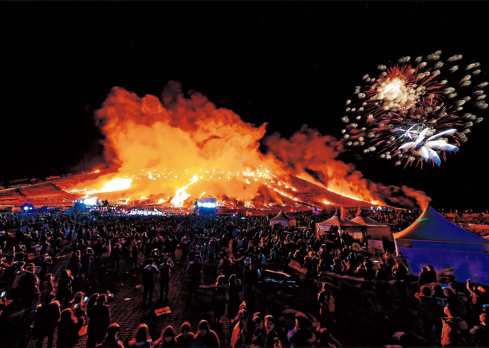
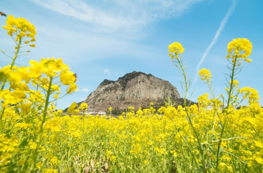
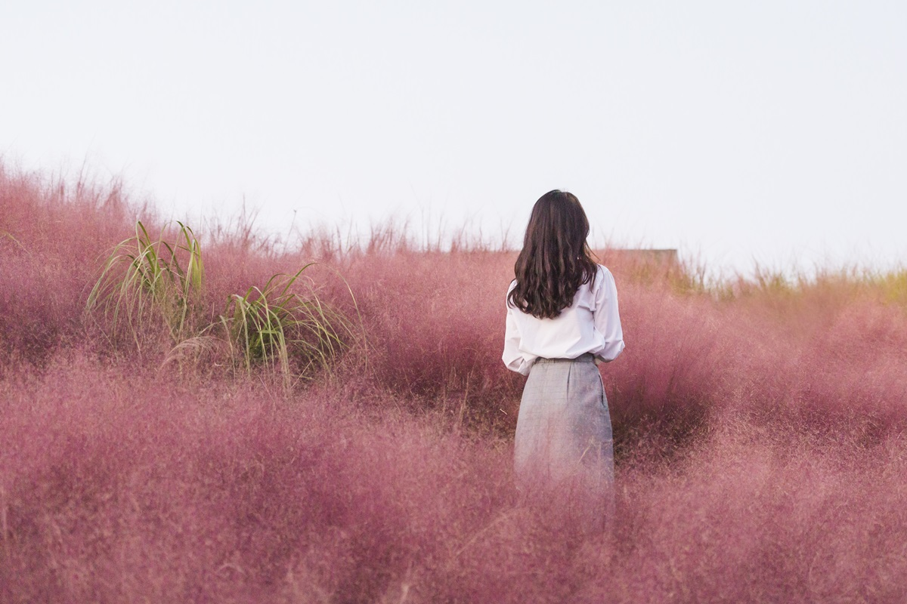

제주들불축제 |
방목을 맡았던 목동(쉐테우리)들은 중산간 목야지 양질의 목초를 찾아다니며 풀을 먹였다. 이 때 중산간 초지의 해묵은 풀을 없애고, 해충을 구제하기 위해 마을별로 늦겨울에서 경칩에 이르는 기간에 목야지에 불을 놓아 양질의 새풀이 돋아나도록 불놓기(방애)를 했다 | |

제주유채꽃축제 |
'유채꽃큰잔치'라는 이름으로 시작된 뒤 제주시(우도면)와 서귀포시에서 번갈아 열었다. 2016년부터 서귀포시 표선면 가시리에서 행사장을 고정해 개최하고 이름도 '제주유채꽃축제'로 바꿨다. '시간을 더하는 마을'이라는 뜻의 가시리(加時里)는 제주에서도 유채꽃이 가장 많이 피는 곳이다. | |

제주핑크뮬리축제 |
제주도에서 유일하게 '대한민국 우수 관광지 전국 20대 업체'에 선정된 휴애리에서 9월 14일부터 10월 31일까지 핑크빛 가득한 축제가 펼쳐진다. '휴애리 핑크뮬리 축제'에서는 다양한 포토존을 마련하여, 셀프웨딩사진이나 가족사진 등을 찍는 관광객들에게 각광받고 있다. 그 뿐만 아니라, 승마체험과 감귤체험 등 제주에서 즐길 수 있는 다채로운 체험의 기회를 통해 많은 이들의 발길을 사로잡고 있다. 동물먹이주기체험, 야생화 자연 학습체험, 전통놀이체험 등의 상설체험프로그램과 감귤체험을 통해 남녀노소 모두의 취향을 맞출 수 있는 축제의 프로그램도 마련되어 있다. |